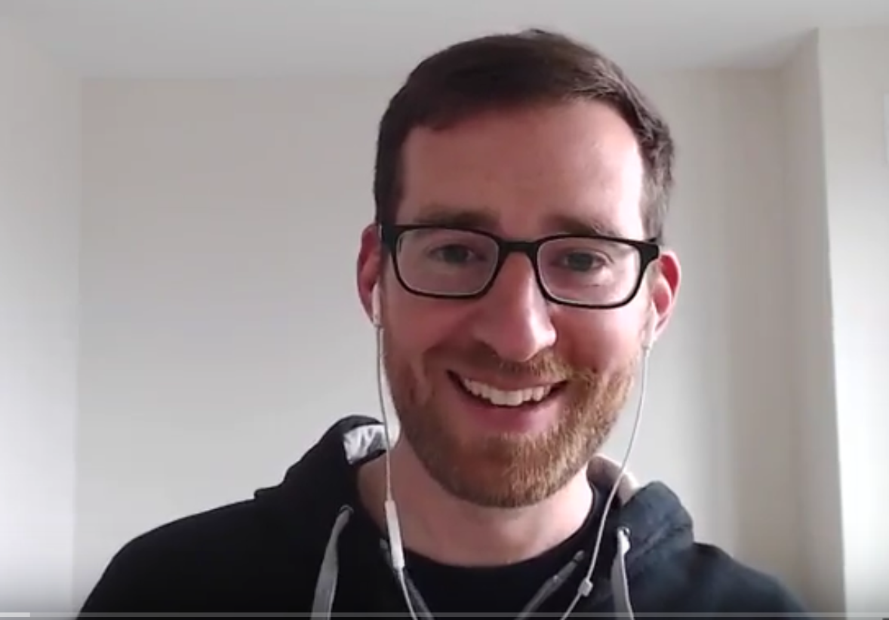
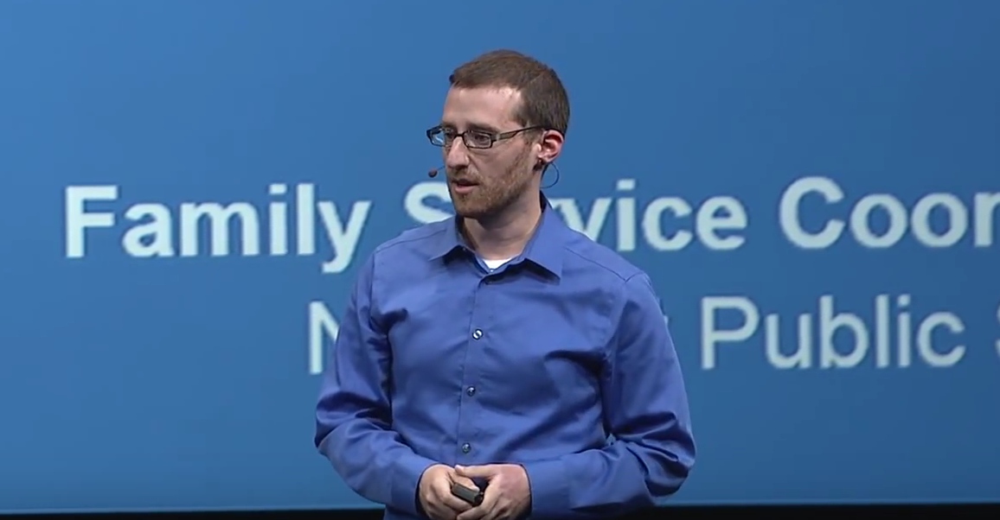
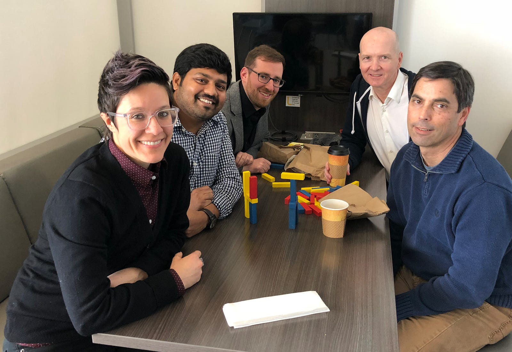
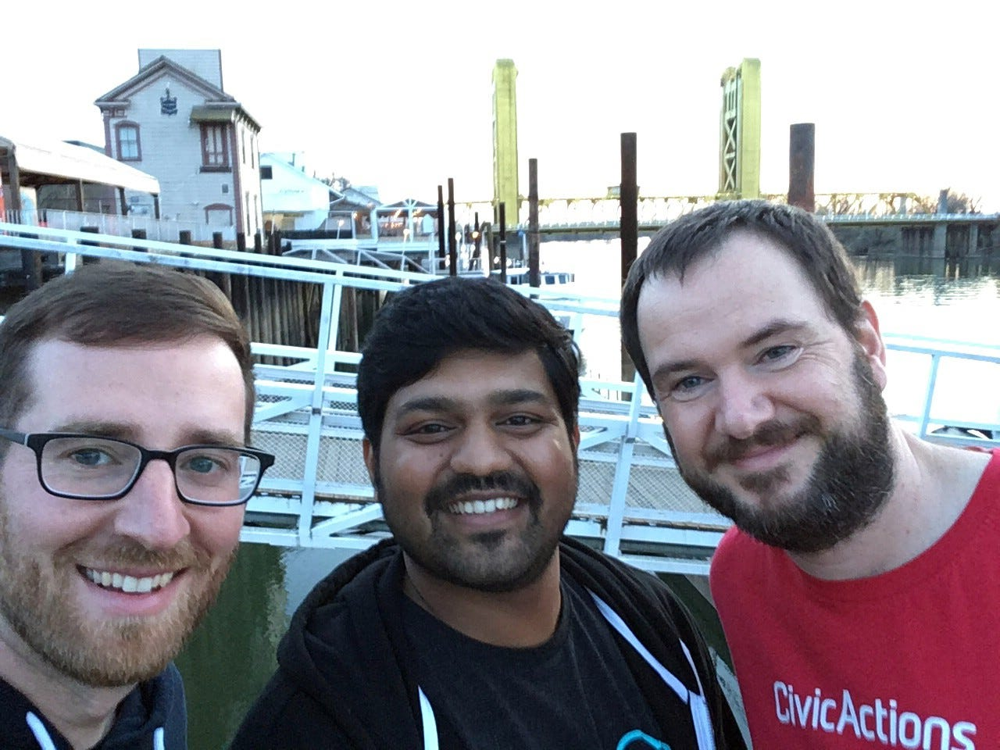
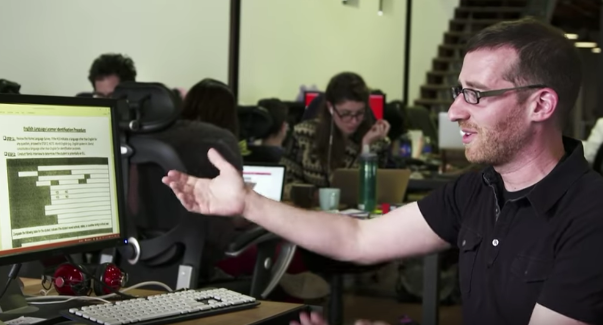
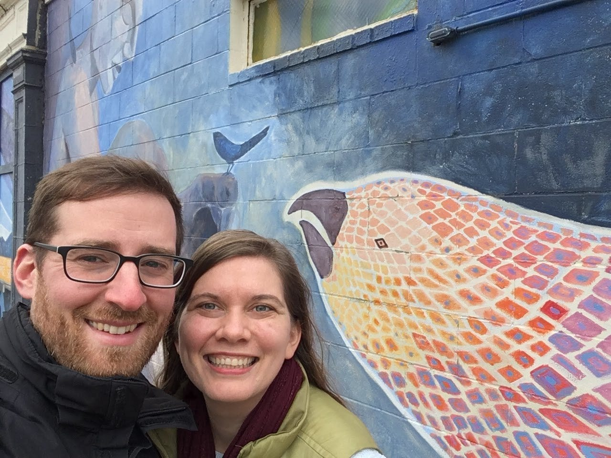

TL;DR: Jeff is passionate about improving systems and processes within government, and has some creative ideas about how to do it. He is laser-focused on outcomes, and it shows in his past projects. Since joining CivicActions, he’s talking more about the emotion behind his work.

What brought you to CivicActions and what are you excited about doing here?
Years ago when I entered civic tech, I had the idealist notion that you could create value for citizens simply by changing a web page or improving a user interface. But I’ve learned this isn’t the whole story. The real challenge of delivering services to users is to change the way government people work and how they think about their jobs. Cultural transformation is required.
“I’m excited about digging into the challenges of improving communication and process within organizations doing good.”
So I was looking for an organization that was dedicated to tackling the bigger problems of digital service delivery. CivicActions appealed to me because they focus on demonstrating transparency, measuring outcomes, and improving the lives of not only the people they’re serving, but also the lives of those they work with.
I’m excited about digging into the challenges of improving communication and process within organizations doing good.
How did you develop a passion for helping government improve its work and service delivery processes?
I worked on several government modernization efforts that left me feeling a bit disillusioned. For example, I worked with a team that was rebuilding a state agency’s website to be more user-friendly, which really just meant migrating all the state’s content from one content management system into another. A better website was built, but it wasn’t transformative of how the government worked or how it thought about service delivery.
“The reality is that people don’t need a better series of government content — they need better services.”
The reality is that people don’t need a better series of government content — they need better services. For example, we were migrating content pages like “Pumpkin Fest 2017” or “How to get unemployment services” instead of working on the unemployment form itself and figuring out better ways to help people apply for and manage that benefit.

What’s your role at CivicActions for bringing culture change to government?
I’m very interested in improving the systems that government employees need to do their jobs.
I get to work on this with the California Child Welfare Digital Service (CWDS) project, a multi-organization effort to modernize the state’s child welfare information system. California is taking an innovative approach by focusing on agile and DevOps practices, free and open source software, and using smaller contracts to empower the state to assume more active product ownership.
CivicActions was brought onto the DevOps contract for the project, so I’m working with people throughout CWDS in an effort to help streamline processes, optimize technical operations, and promote integration of dev and operations teams to start fostering a true DevOps culture.
The vendors for CWDS were hired through an agile development vendor pool. How does this affect the project structure?
The nature of contracting for large government projects has historically been to write a big proposal and award the work to a prime contractor, who then hires a plethora of subcontractors. This causes so many problems, including minimal product ownership from the government and a lack of technical and design savvy employees who can competently oversee and coordinate the work. Plus, the government ends up spending more money if things ‘go south’ because they don’t want to cancel on a huge expensive contract.
“Through daily check-ins, government workers become more attuned to the product management, design, and needs of the system.”
CWDS is trying to do things differently by breaking the child welfare project into small RFPs for the various system platforms, which allows them to get smaller, progressive vendors in the door who bring an agile culture of collaboration. Through daily check-ins, the government workers become more attuned to the product management, design, and needs of the system. They are also responsible for corralling all the different vendors to work together, which is really new for government.

What are the challenges with a large scale, multi-vendor project, and how is CivicActions helping to address them?
CWDS is trying some new things for government, but the effort presented some challenges. There’s been a lot of managerial turnover, the organization grew in size rapidly, and scope became massive before the organization developed maturity to ship small features. There are lots of people doing great things, but the organization needs to step back and refocus its mission on delivering small, iterative features for case workers.
“CivicActions is working to infuse habits of open transparency and crisp communication.”
CivicActions is working to infuse habits of open transparency and crisp communication into the whole CWDS effort. We’ve talked to people throughout the organization to identify the pain points and where communication could be improved. We’re creating systems to help CWDS realize its vision of the whole team becoming a well-oiled machine — but one powered by humans, built for humans, creating systems that work for humans.
In the daily grind of technology and operations, how do you maintain focus on the end users?
That’s our number one priority!
We’re training the teams we work with to take time to understand the real-life problems we are trying to solve for the people who will use the system. The daily thought should be, “WHY am I working on this? What is the intended outcome? How many humans will this affect?” This is not just the responsibility of management, but of every person working on the project.
“By focusing on outcomes, you raise the bar for the project and promote deeper thinking about everyday tasks.”
By focusing on outcomes, you raise the bar for the product and promote deeper thinking about everyday tasks. You should always ask, “Why?” before you start to build and design systems. This is how you create that fundamental change in government service delivery. It takes time, but you have to start somewhere.

How does CivicActions build and maintain a strong partnership with government clients?
A strong vendor / client partnership requires transparency on both sides, with everyone being willing to admit shortcomings and brainstorm solutions openly.
The CWDS management has been eager to share and learn with us, which has made for a powerful collaboration so far. They are also willing to experiment, which is really cool — you don’t see that very often in government.
“A strong vendor / client partnership requires transparency on both sides.”
During the first week my team was onsite, people kept pulling us into the hall to share about blockers they were experiencing or ideas about how to make things better. They knew we were there to improve things, and they welcomed us to join them in that effort.
No one is burying their problems, which is very admirable.
What are some improvements being made on the technical operations front?
A primary goal for our engagement is to increase velocity of developers. It’s been a challenge to get from “done” code to “deployed” code in the rapid cycles required for effective agile development. Part of the solution will be to increase visibility and stability for the developers — you can’t run quickly if you can’t see where you’re going! So we’re trying to create more visibility and control for how the different teams work together.
“We’re trying to create more visibility and control for how the different teams work together.”
One way we’re tackling this is to help the developers deploy their microservices with more confidence by making their dependencies clearer. For example, if there are 15 microservices deployed to one environment, deploying code as one developer can be like trying to compile a jigsaw puzzle accurately when the picture is always moving and changing, due to the actions of other devs. We’re trying to make it possible for release management and devs to be aware of which versions of each project are stable.

What’s the importance of involving developers in operations work, and how exactly are you doing it?
When developers can understand how their work will run operationally, they can be involved in both the maintenance and the building of it. It gives them a higher-level view of how their work becomes part of the system, and also a realization that HOW they do their work makes a difference. Developers aren’t just machines building software; they are humans building things that will be used by humans.
“People have to be willing to make new habits and realize the value in taking extra steps that will deliver huge gains throughout the organization.”
We’re working on a manifest file that shows which versions of projects are deployed to the production environment so developers know which things are stable. The future hope is that this file could be machine-readable and be used to spin up entire software environments. Then the engineers could do their work without the data, components, and software changing under them every minute. It would be easier for them to reliably test things.
But all of this starts with people. Building the file is easy; getting folks to update it and version their software is a cultural change. People have to be willing to make new habits and realize the value in taking extra steps that will deliver huge gains throughout the organization.
Culture is a big piece of the government transformation puzzle. How have you experienced this at CivicActions?
I’m impressed by the balance of transparency and tactfulness exhibited by my teammates at CivicActions.
Particularly in the work at CWDS, I’ve seen that there’s an acknowledgement of both the logistics and the emotion behind the work, that both are important, and that both should be talked about. I’ve noticed myself striving to rise to the bar that CivicActions has set. I’m talking about the emotion behind my work more than I ever have, and it feels good — it feels real.
“There’s an acknowledgement of both the logistics and the emotion behind the work.”
The company also has a principle of fierce openness. Everything they produce is free and open source. I see them sharing their work, learnings, even failures — everything is made public for anyone to use and benefit from. So much of capitalism says this can’t work. But I see it working, and it’s so hopeful.

From the team
“Jeff maintains a zen calm no matter how big the fire.” John, Senior Strategist
“Jeff quickly figures out how to leverage his experience against the current needs of a project. Once he sees what needs to happen next, he just gets it done.” Jim, Performance Analyst
“He brings thoughtful listening and brilliant insight to everything he does to generate civic impact — Jeff is a joy to work with (and can pun too!)” Owen, Director of Engineering
Connect with Jeff on LinkedIn and Twitter, watch how he helped create friendly online services for Rhode Island schools, or drop him a line to ask him to speak. To join Jeff and the CivicActions team in transforming government digital services, check out open positions here.